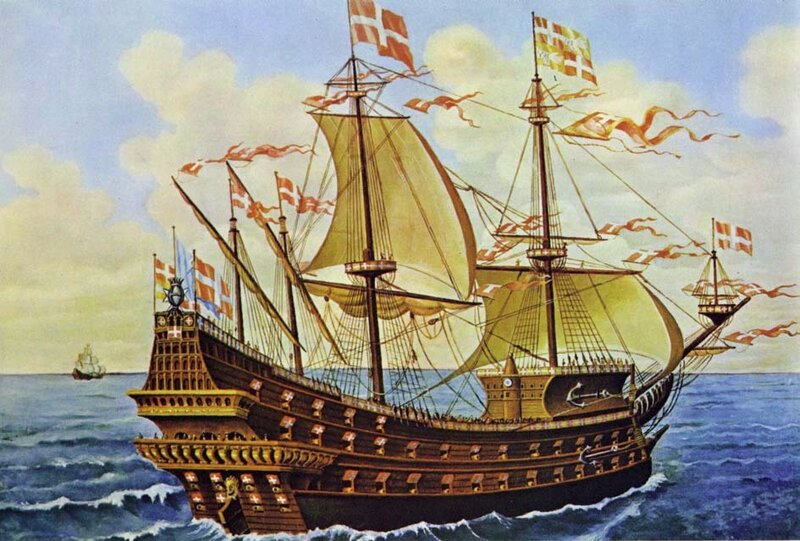
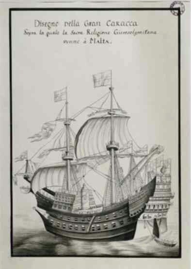
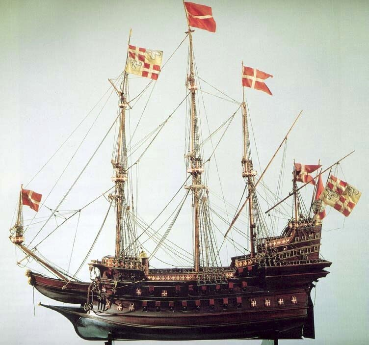

Требуется некоторое время, чтобы разобраться с документами по периоду между осадами Родоса и Мальты и собственно с осадой Мальты. Да и настроения нет. Учитывая, что «служенье муз не терпит суеты», отложим все это на потом. Ненадолго, думаю. А чтобы не тратить времени попусту – небольшой пост о флоте госпитальеров, в частности, о так называемой «Большой Каракке». Кроме общих источников по истории мальтийского ордена, в данном случае будет использована диссертация А.Д. Атауза «Торговля, пиратство и морская война в центральном Средиземноморье» (2004) и исследование Д. Тайе «Госпитальеры св. Иоанна Иерусалимского в Ницце и Вильфранше.»

La Grande Caraque "La Santa-Anna" - Société de l'Histoire et du Patrimoine de l'Ordre de Malte (Paris)
Еще в начале XIV века госпитальеры поняли, что их прежняя роль как сухопутных рыцарей закончилась. После захвата Родоса в 1310 г. они вели боевые действия в основном на море и добились, что их флаг с восьмиугольным крестом стал внушать противнику уважение и страх. Госпитальеры вовремя осознали, что они не смогут противостоять громадной силе османов на суше, и лишь в море есть надежда оказать достойное сопротивление. Собственно Родос и строился как укрепленная морская база ордена св. Иоанна Иерусалимского. С родосского периода не появилось больше ни одного сообщения о том, что рыцари-иоанниты проявили себя как лихие кавалеристы. Говоря более поздними терминами, начиная с Родоса в основу военной доктрины иоаннитов была положена идея «щита и меча»: мощные крепости на Родосе, в Бодруме и на малых островах Додеканесса выполняли роль щита, а небольшой, но хорошо организованный военный флот – роль меча. Небольшая численность корабельного состава этого флота компенсировалась высоким уровнем боеспособности каждого отдельно взятого корабля, крепким профессионализмом и качественной подготовкой каждого командира и члена его экипажа. Флот иоаннитов решал задачи борьбы с кораблями основного противника – Османской империи и ее сателлитов в Северной Африке, но не брезговал и корсарством, захватывая торговые корабли с товарами, и превращая их экипажи в галерных рабов. Основной боевой единицей флота иоаннитов стала галера, которую во всех письменных источниках того времени называли «галерой Религии», «galères de la Religion». Об этих галерах у нас предстоит еще длинный и обстоятельный разговор.
Но госпитальеры не ограничивались одними галерами. В составе их флота издавна находились и парусные, или так называемые «круглые» суда. И нужно понимать, что эти корабли, особенно в период неопределенности между уходом с Родоса и размещением на Мальте, т.е. с 1523 по 1530 гг., служили иоаннитам, а также тем, кто с ними ушел, еще и плавучим домом. Это были не военные корабли в точном смысле этого слова, а скорее транспортные суда, способные в случае необходимости защитить себя.
Первое упоминание о «Большой каракке» госпитальеров встречается у архивиста ордена Рэбо (Jean François Raybaud, Histoire des Grand Prieurs et du prieure de Saint Gilles (Nimes, 1905)). Он пишет (с.35), что в 1487 г. брат Жак Сарье (Jacques Sarriet), капитан «Большой каракки» (Grand Carrack) находился в порту Эг-Морта, где на борт его корабля грузили товары, необходимые для Родоса. Названия судна Рэбо не приводит. Второе упоминание мы встречаем у Босио, который пишет о Gran Nave di Rodi., большом транспортном корабле, который в 1498 г сопровождал в боевом походе отряд галер.

Рисунок анонимного автора, «Большая Каракка» XVIII в., Aix-en -Provence, Cité du Livre, Bibliothèque Méjanes, Ms. 1307
Вновь упоминание о «Большой каракке» встречается в описании захвата турецкого ‘gran nave’ «Магребина» в 1507 году. Мы коротко говорили об этом раньше. По традиции считается, что захват этот осуществлен был также караккой «San Giovanni Battista». Но, к сожалению, эта традиция не находит подтверждения в первоисточниках того времени. Нет документальных данных и о том, что захваченная «Магребина» была после реконструкции переименована в «Санта Марию». Единственным фактом, на основе которого было сделано утверждение об идентичности «Магребины» и «Санта Марии» - близость дат захвата «Магребины» и появления (спуска на воду?) «Санта Марии». Но тем не менее в большинстве современных изданий, в том числе и достаточно серьезных, содержится утверждение о том, что «Санта Мария» - это переоборудованная «Магребина».
Первое достоверное письменное свидетельство, позволяющее идентифицировать «Большую каракку» ордена как «Санта Марию» относится к 1523 году, когда рыцари покидали Родос. Именно тогда Босио (Iacomo Bosio, Histoire des Chevaliers de L’Ordre de S. Iean de Hiervsalem, trans. Pierre de Boissat (Paris, 1643) ) ссылается на «Санта Марию» как «каракку Родоса», в подлиннике это выглядит так: «la Gran Nave, Santa Maria, detta volgarmente la Carracca di Rodi» ((Большой корабль, Санта Мария, известный в народе как Каракка Родоса). В том же году Великий магистр приказал капитану «Санта Марии» Пиетро ди Кредемусу направиться в Вильфранш на соединение с новым кораблем «Санта Анна». И именно с этого места Босио начинает называть «Санта Марию» «старой караккой», описывая вместе с тем новую каракку как «самый большой, самый изумительный корабль, который когда-либо видело Средиземное море.» 20 октября 1530 года Санта Мария, была сорвана ураганом с якорей и выброшена на берег, и хотя источники сообщают, что повреждения были несущественными, сведений о каком-либо ее использовании в море после этого дня нет.
Закончила свои дни «Санта Мария» 5 октября 1531 года. Превращенная к тому времени в плавучую тюрьму для содержания пленных, захваченных при осаде Модона, она была подожжена одной находящейся там рабыней. Пожар вызвал взрыв крюйт-камеры, а заряженные пушки на борту начали самопроизвольно стрелять. Чтобы не допустить ущерба береговым сооружениям, «Санта Мария» была затоплена выстрелами орудий с форта Сен Анжело (Босио). Согласно тому же Босио вся артиллерия с затопленной каракки и «сокровища ордена» были подняты на поверхность.
В этом рассказе вызывает недоумение тот факт, что сокровища ордена и невыгруженные боеприпасы находились на корабле, который был выведен из строя еще в 1530 г. и использовался в качестве плавучей тюрьмы. Тем более, что Великий магистр, флагманским кораблем которого была «Санта Мария», уже давно покинул ее.
18 декабря 1522 года, когда уже решена была судьба Родоса, в Ницце была спущена на воду новая «Большая Каракка» иоаннитов «Санта Анна» (Sant’ Anna).
Первый боевой поход нового корабля, который отмечен в сохранившихся документах, состоялся в мае 1531 года, когда она на переходе с Мальты в Тулон встретилась на траверзе Фавиньяны (Favignana, Сицилия) с отрядом мусульманских судов в составе 25 единиц, в составе которого находилась эскадра из 13 галер и галеасов под командованием Барбароссы (о нем мы более подробно поговорим позже). Капитан каракки Татчбеф (Toucheboeuf) поднял боевые флаги и вымпелы и открыл артиллерийский огонь по кораблям соединения противника, вынудив корсаров вернуться на свои базы. Второй раз Босио упоминает «Sant’ Anna» при описании рейда иоаннитов на порт Корон в Морее в 1532 году. При этом корабль все еще находился под командованием Татчбефа и имел на борту 100 рыцарей и 120 солдат помимо обычного экипажа в составе 500 человек. Вот отрывок из этого описания:
Фото модели Большой Каракки из работы D. Tailliez Les Hospitaliers de Saint-Jean de Jérusalem à Nice et Villefranche.
«Большая Каракка была много больше Гримальди, которая могла взять на борт 14 000 салм зерна, если мерить в сицилийских мерах. Она имела четыре палубы над водой и две под водой, причем последние были покрыты свинцовыми листами, прикрепленными бронзовыми гвоздями, что делало корпус настолько прочным, что он был подобен сделанному из железа и пушки целой армии не могли потопить ее. На борту была церковь, арсенал, в котором хранилось вооружение для 500 человек, общий зал, жилое помещение и гостиная для Великого магистра и для совета, столовая, офицерские каюты, помещение для кузнеца с отдельными галереями, отделанными латунью и медью; вокруг кормы находились цветы в больших горшках. Не было необходимости откачивать воду из трюма, так как там не было даже капли воды. На корабле было 50 больших орудий и большое количество малых. Грот-мачта была настолько велика, что шесть человек могли едва обхватить ее. Каракка была очень быстроходна и очень маневренна и была украшена росписью и флагами.»
Таким образом, если исходить из данного описания Босио, то эта каракка, (а именно караккой почти наверняка была «Sant’ Anna»), имела водоизмещение около 2500 тонн. Если поверить автору описания, то «Санта Анна» была больше знаменитой английской каракки Great Harry (Henry Grace à Dieu, спущена на воду в 1514 году, имела водоизмещение 1000-1500 т) и больше Grand François (потерпевшей кораблекрушение в 1533 г., водоизмещение 1500-2000 т). Что касается значения свинцовой обшивки, которая многими нашими авторами считается чуть ли не первым образцом бронирования корпуса, то тут явное преувеличение. Свинцовые листы были всего лишь средством борьбы с морскими червями и повышали водонепроницаемость корпуса, а отнюдь не являлись броневым поясом.